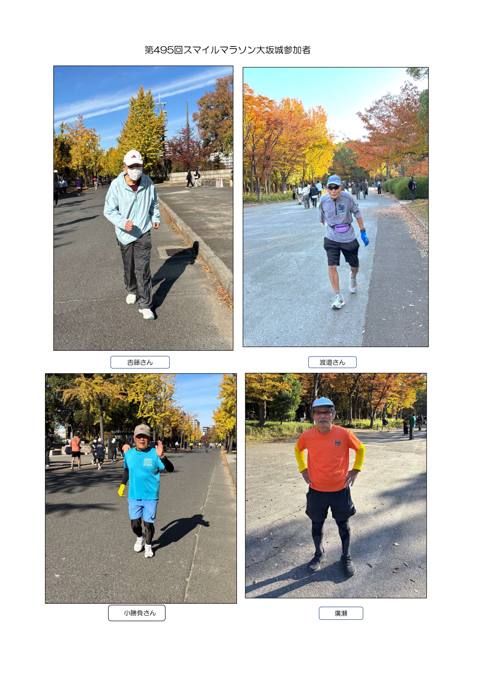

2025-11-23 17:59:48
2025年11月23日（日） 大阪城公園 天候 : 晴れ 担当 : 廣瀬利光
| No. | 氏名 | 種目 | 回数 | タイム | フル百 | コメント |
|---|---|---|---|---|---|---|
| 1 | 廣瀬 利光 | フル | 636 | 6:04:23 | 846 | コースの銀杏並木の黄色と桜の紅葉が綺麗でした。体調も良く楽でした。 |
| 2 | 小勝負 繁利 | フル | 351 | 6:31:25 | 828 | 銀杏並木道ご立派!!カメラマンがコースに一杯で走りにくかった。 |
| 3 | 渡邊 源治 | フル | — | 7:26:13 | 719 | 絶好調!?本当?絶好の季節!いつもより早く走れました。 |
| 4 | 吉藤 尚 | フル | — | 10:30:00 | 192 | 最適を思わせる陽気で、吐く息遣いが少し楽に感じながらのランでした。 |
大坂城は秋の紅葉が最高でした。天気も良く3連休で海外からの観光客が
どっと押し寄せコース上も一杯溢れました。それにロードトレインと自転車が通る
ので避けながらのランでした。参加者4人ともフル完走しました。陽気な天候に恵
まれいつもよりタイムが良かったとの感想でした。
